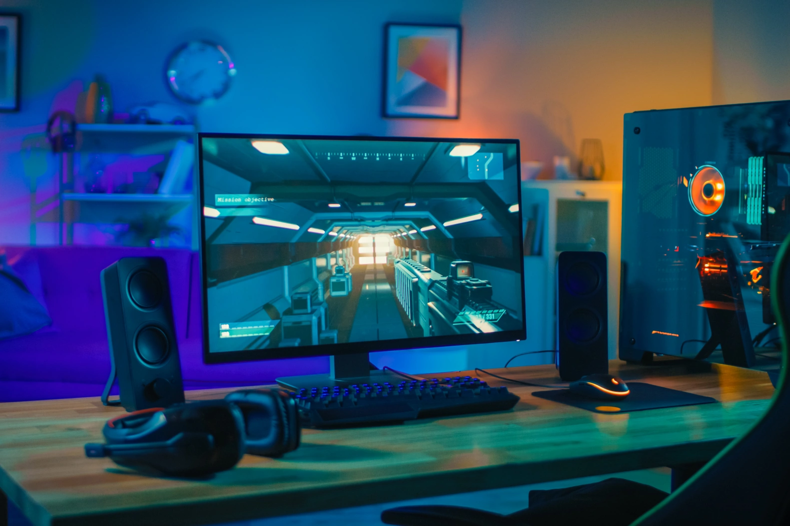
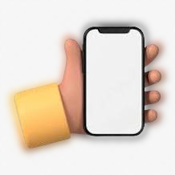

VIDEO GAMES ARE EVERYWHERE !!
Where exactly can you play video games?
- PC (Personal Computer)/Laptop
- Console
- Mobile
PC (Personal Computer) / Laptops
To play on a PC, which stands for Personal Computer, you need good basic components.
Like: CPU, GPU, Motherboard, Memory(RAM), Storage, PSU, System Cooling, and
other COMPATABLE Gaming peripherals.
To know more aboout PCs and where to start click HERE.
From the author personally, GRAPHICS CARD is the most important component.
Frames per minute being low really handicaps gamers during gaming sessions.
To find out where to pick your parts out for your very own PC
check out PC Part Picker.
It is very useful and will show you which parts are compatable
and which arent, and classifies the components in a very organized way.

Consoles
Consoles, similar to PCs, are pretty common among the gaming community.
Consoles include: Xbox, PlayStation, Nintendo Switch, Wii and many more.


Mobile
Mobile gamers are the most common type of gamers, yet are made fun
of the most. They are underrated. Lots of good games like Subway Surfers,
Temple Run, Among us, Pokémon Go, and Genshin Impact are all
mainly played on mobile and are quite fun.

Click here to go to the top